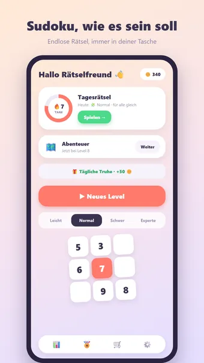
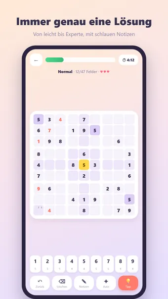
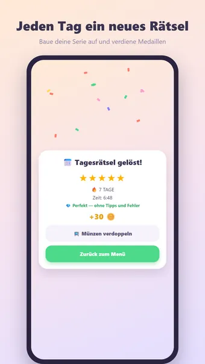

Über Sudoku
Spiele Sudoku, das klassische Zahlenrätsel — jederzeit, überall und komplett offline. Fülle das Gitter so, dass jede Ziffer 1–9 in jeder Zeile, Spalte und jedem 3×3-Block genau einmal vorkommt!
So wird gespielt
Jedes Rätsel wird frisch generiert und hat garantiert genau eine Lösung. Tippe auf ein Feld, wähle eine Ziffer und nutze Notizen für Kandidaten. Fehler werden sofort sichtbar; nach drei Fehlern ist die Runde vorbei.
Vier Schwierigkeitsgrade
- Leicht: viele vorgegebene Ziffern, ideal für zwischendurch
- Normal: das klassische Zeitungsrätsel
- Schwer: für geübte Löser
- Experte: minimale Hilfe — für echte Rätselfans
Abenteuer-Modus
Spiele dich durch hunderte nummerierte Level mit steigendem Schwierigkeitsgrad. Reise durch farbenfrohe Welten, verdiene auf jedem Level eine Medaille und sichere dir Meilenstein-Belohnungen.
Tägliches Rätsel
Jeden Tag ein einzigartiges Sudoku, für alle dasselbe. Verdiene eine Medaille von 1 bis 5 Sternen und baue eine Serie auf: 3, 7, 30 oder sogar 100 Tage in Folge!
Münzen und Designs
Verdiene Münzen mit jedem gelösten Rätsel und gib sie für Tipps oder neue Designs aus: Wald, Weltraum, Neon, Holz, Marmor, Weihnachten und Halloween. Nur kosmetisch — kein Pay-to-win.
Und außerdem
- Tipps gegen Münzen
- Schlaue Notizen, die sich selbst aufräumen
- 23 Erfolge, vom ersten Rätsel bis zur 100-Tage-Serie
- Ausführliche Statistiken: Bestzeit, fehlerfreie Rätsel und mehr
- Zen-Modus: Timer ausblenden und entspannt lösen
- Sound und Vibration (in den Einstellungen abschaltbar)
- Verfügbar auf Deutsch, Englisch, Niederländisch, Spanisch, Französisch und Portugiesisch
Kostenlos spielbar. Die App zeigt Werbung, die du mit einem optionalen Kauf entfernen kannst; ein Konto ist nicht nötig.
Häufige Fragen
Ist Sudoku kostenlos?
Ja. Sudoku kannst du kostenlos herunterladen und spielen. Die App zeigt Werbung, die du mit einem optionalen In-App-Kauf entfernen kannst.
Funktioniert Sudoku offline?
Ja. Sudoku funktioniert ohne Internetverbindung, also auch im Flugzeug, im Zug oder überall ohne WLAN.
Brauche ich ein Konto, um Sudoku zu spielen?
Nein. Es gibt keine Registrierung und keine Anmeldung: App öffnen und losspielen. Deine Spiele und Einstellungen bleiben auf deinem eigenen Gerät.
Wie spielt man Sudoku?
Jedes Rätsel wird frisch generiert und hat garantiert genau eine Lösung. Tippe auf ein Feld, wähle eine Ziffer und nutze Notizen für Kandidaten. Fehler werden sofort sichtbar; nach drei Fehlern ist die Runde vorbei.
Gibt es jeden Tag eine neue Herausforderung?
Jeden Tag ein einzigartiges Sudoku, für alle dasselbe. Verdiene eine Medaille von 1 bis 5 Sternen und baue eine Serie auf: 3, 7, 30 oder sogar 100 Tage in Folge!
Wo kann ich Sudoku herunterladen?
Sudoku gibt es für Android-Smartphones und -Tablets bei Google Play. Nutze den Button oben auf dieser Seite.
Diese Spiele könnten dir auch gefallen
Nonogram
Klassisches Nonogram. Endlose Rätsel und täglich eine neue Herausforderung.
Google PlayMinesweeper
Der Minesweeper-Klassiker. Endlose Minenfelder und täglich ein neues Rätsel.
Google PlayBlockpuzzle
Füll das Brett exakt aus. Immer lösbar, jeden Tag eine neue Aufgabe.
Google PlayRechtliches
Hier findest du die rechtlichen Dokumente, die für Sudoku gelten.
Kontakt
Fragen, Feedback oder eine Datenschutzanfrage? Schreib an joostmuijsenberg.dev@gmail.com.